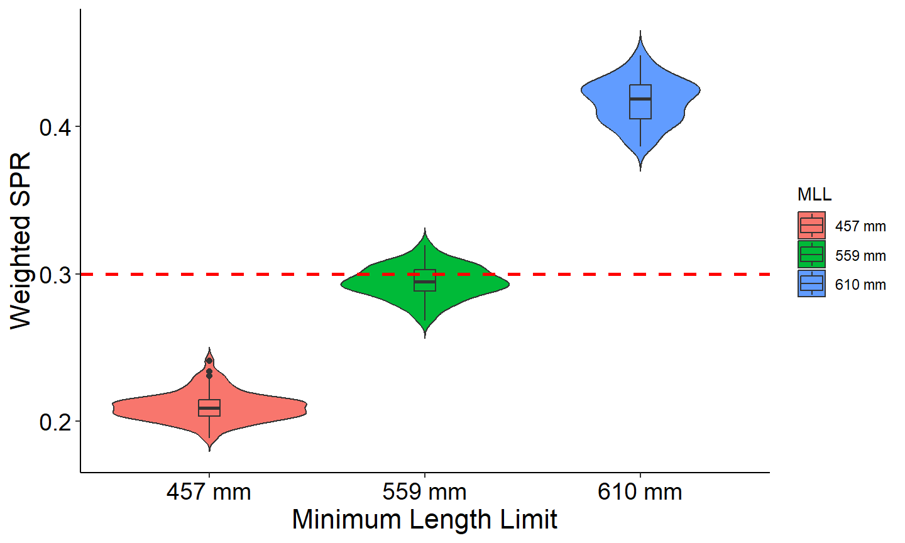

Simulate a population using the dynamic pool model with a Ricker stock-recruitment curve
2026-11-13
Source:vignettes/articles/dpmBHricker.qmd
The objective of this article is to demonstrate how to use rFAMS to simulate a population and estimate population characteristics using the dynamic pool model. The dynamic pool model projects a population forward based on a Ricker stock-recruitment curve, life history parameters, and mortality. The dpmBH_minLL() function has the following arguments:
- simyears: A single numeric for the lower limit of minimum length limit for harvest in mm.
- minLL:A single numeric representing the minimum length limit for harvest in mm.
- cf: A matrix of conditional fishing mortality where each row represents a year and each column represents age. Ages are age-0 through maximum age.
- cm: A matrix of conditional natural mortality where each row represents a year and each column represents age. Ages are age-0 through maximum age.
- lhparms: A named vector or list that contains values for each N0, tmax, Linf, K, t0, LWalpha, and LWbeta. See makeLH for definitions of these life history parameters. Also see details.
- recruitment_type: A string that indicates if recruitment is being supplied as a
vector(which requiresrecvalso specified or based on a stock-recruitment model,stockrecruit(which requires relevant coefficients also specified) - srmod: A string that indicates the type of stock-recruitment model,
Ricker,BevertonHolt,Shepherd. Required whenrecruitment_type=stockrecruit. - a: A single numeric to represent alpha in the Ricker, Beverton-Holt, and Shepherd stock-recruitment models. Required when
srmod=Ricker,BevertonHolt, orShepherd. - b: A single numeric to represent beta in the Ricker, Beverton-Holt, and Shepherd stock-recruitment models.Required when
srmod=Ricker,BevertonHolt, orShepherd. - c: A single numeric to represent c in the Shepherd stock-recruitment models. Required when
srmod=Shepherd. - sigmaR: A single numeric to represent standard deviation of annual recruits in the Ricker, Beverton-Holt, and Shepherd stock-recruitment models. Required when
srmod=Ricker,BevertonHolt, orShepherd. - recv: A numeric vector with length
simyearsthat specifies the number of recruits each year. This vector is best generated using the . All values must be greater than 0. Required whenrecruitment_type=vector. - species: is a single character to specify the species used in the simulation and will define the length for stock, quality, preferred, memorable, and trophy. Length categories are obtained from the FSA package, see the PSDlit documentation.
- group: is a single character to specify the sub-group name of a species used in the simulation and will define the length for stock, quality, preferred, memorable, and trophy. Length categories are obtained from the FSA package, see the PSDlit documentation.
- SPRdat: A named list that contains values for each
FLR,FLRint,FLRslope,MatAge,percF, andpercFSpawn. See for definitions of these parameters. Only used when calculating spawning potential ratio. - matchRicker: A logical that indicates whether the yield function should match that in Ricker (). Defaults to TRUE. The only reason to changed to FALSE is to try to match output from FAMS. See the YPR_FAMSvRICKER article.
Organize input parameters
simyears and minLL require a single numeric value. This example simulates a population for 100 years with a minimum length limit of 400mm.
simyears <- 100
minLL <- 400The lhparms requires a list or vector that is created with the makeLH() function. The makeLH() function creates a list of the life history parameters needed. Including, the initial number of recruits, maximum age of fish in your population, von Bertalanffy growth model parameters (, , and ), and parameters from the log10-transformed weight length model (alpha and beta). By default, the makeLH() returns a list. Growth length-weight model paramaters can be generated from functions in the FSA package. See the Make Life History object article for more details. The example below uses the following life history parameters:
# create life history parameter object
LH <- makeLH(N0=100,tmax=15,Linf=1349.5,K=0.111,t0=0.065,LWalpha=-5.2147,LWbeta=3.153)cf and cm are a matrix with rows = simyears (number of years specified in the simulation) and columns = tmax (maximum age). This example assigns a cm of 0 to the first year and 0.18 to the remaining years and is constant across ages; and a cf of 0 for the first year and 0.33 to the remaining years and is constant across ages. Note, Ages must be age-0 through maximum age. Thus, a cf and cm matrix will have maximum age plus one column.
Run the dynamic pool model
In this example, recruitment each year is generated using a Ricker stock-recruitment curve. Other recruitment models available include Beverton-Holt and Shepherd models. Each model requires specific coefficients to also be specified in the dpmBH_MinLL function. The Ricker model requires a, b, and sigma. See the stock-recruitment article for a full explanation of coefficients for each model. To initiate the stock-recruitment model, the recruitment_type argument must be set to stockrecruit. The srmod argument is used to specify the specific stock-recruitment model.
The stock-recruitment models uses spawning stock calculated using the percentage of females and percentage of spawning females at age. This information is also used when calculating spawning potential ratio. Therefore, the SPR data object must be specified when using a stock-recruitment curve. See documentation for makeSPR for more information.
The dpmBH_minLL function will use the arguments above to simulate the population based on a vector of recruitment and generate a list with two data.frame object. The first list item contains a data.frame with a summary by age and the second list item contains a data.frame with a summary by year. The example used here specifies “Striped Bass” that are in the group “landlocked”. The species and group are used to assign appropriate PSD categories see FSA package for more information about PSD categories.
#run dynamic pool simulations
out1<-dpmBH_MinLL(simyears = simyears, minLL = minLL, cf = cf, cm = cm,
recruitment_type = c("stockrecruit"), srmod = c("Ricker"),
a = 6.8, b = 0.0025, sigmaR = 0.2, SPRdat = SPRdat,
lhparms = LH, matchRicker=FALSE,species="Striped Bass",group="landlocked")View the first few lines of each summary
head(out1[[1]]) #Summary by age
#> year yc age length weight nstart exploitation expect_nat_death cf
#> 1 1 1 0 0.0000 0.00000 100.00000 0.0000000 0.0000000 0.00
#> 2 2 1 1 133.0349 30.35037 100.00000 0.0000000 0.1800000 0.33
#> 3 3 1 2 260.8383 253.58225 82.00000 0.0000000 0.1800000 0.33
#> 4 4 1 3 375.2145 798.00101 67.24000 0.3012967 0.1493033 0.33
#> 5 5 1 4 477.5741 1707.32249 40.54091 0.3012967 0.1493033 0.33
#> 6 6 1 5 569.1797 2968.94019 22.27318 0.3012967 0.1493033 0.33
#> cm F M Z S biomass nharvest ndie
#> 1 0.00 0.0000000 0.0000000 0.0000000 1.0000 0.000 0.000000 0.000000
#> 2 0.18 0.0000000 0.1984509 0.1984509 0.8200 3035.037 0.000000 18.000000
#> 3 0.18 0.0000000 0.1984509 0.1984509 0.8200 20793.744 0.000000 14.760000
#> 4 0.18 0.4004776 0.1984509 0.5989285 0.5494 53657.588 15.828150 10.870941
#> 5 0.18 0.4004776 0.1984509 0.5989285 0.5494 69216.407 12.214843 6.052891
#> 6 0.18 0.4004776 0.1984509 0.5989285 0.5494 66127.727 6.710835 3.325458
#> yield minLL N0 Linf K t0 LWalpha LWbeta tmax notes
#> 1 0.00 400 100 1349.5 0.111 0.065 -5.2147 3.153 15
#> 2 0.00 400 100 1349.5 0.111 0.065 -5.2147 3.153 15
#> 3 0.00 400 100 1349.5 0.111 0.065 -5.2147 3.153 15
#> 4 20513.92 400 100 1349.5 0.111 0.065 -5.2147 3.153 15
#> 5 27456.93 400 100 1349.5 0.111 0.065 -5.2147 3.153 15
#> 6 24510.96 400 100 1349.5 0.111 0.065 -5.2147 3.153 15
head(out1[[2]]) #Summary by year
#> year age_1plus Yield_age_1plus Total_biomass nharvest_age_1plus
#> 1 1 0.0000 0.00 0.000 0.00000
#> 2 2 100.0000 0.00 3035.037 0.00000
#> 3 3 182.0000 0.00 23828.781 0.00000
#> 4 4 249.2400 20513.92 77486.369 15.82815
#> 5 5 289.7809 47970.85 146702.776 28.04299
#> 6 6 312.0541 72481.81 212830.503 34.75383
#> ndie_age_1plus substock stock quality preferred memorable trophy PSD
#> 1 0.00000 100 0 0 0 0 0 0.0000000
#> 2 18.00000 200 0 0 0 0 0 0.0000000
#> 3 32.76000 282 0 0 0 0 0 0.0000000
#> 4 43.63094 282 67 0 0 0 0 0.0000000
#> 5 49.68383 282 107 0 0 0 0 0.0000000
#> 6 53.00929 282 107 22 0 0 0 0.1705426
#> PSD_P PSD_M PSD_T wtSPR
#> 1 0 0 0 0
#> 2 0 0 0 0
#> 3 0 0 0 0
#> 4 0 0 0 0
#> 5 0 0 0 0
#> 6 0 0 0 0Plot Results
The output contains a lot of information and there are several potential figures that can be constructed. Below are examples of a few figures that might be of interest. The first set of figures will explore the data summarized by age and the second set of figures will explore the data summarized by year. First, a custom theme is created to use across all plots.
# Custom theme for plots (to make look nice)
theme_FAMS <- function(...) {
theme_bw() +
theme(
panel.grid.major=element_blank(),panel.grid.minor=element_blank(),
axis.text=element_text(size=14,color="black"),
axis.title=element_text(size=16,color="black"),
axis.title.y=element_text(angle=90),
axis.line=element_line(color="black"),
panel.border=element_blank()
)
}Exploring the summary by age output
The three figures below plot 1) yield vs age of a single year class 2) harvest vs age and 3) biomass vs age. Note since recruitment, cf, and cm was fixed across all year classes, all year classes will have the same age vs total yield.
#Plot date using summary by age for a specific year class
#filter for year class = 40
plotdat<- out1[[1]] |> filter(yc==40)
#Plot yield vs age
ggplot(data=plotdat,mapping=aes(x=age,y=yield)) +
geom_point() +
geom_line() +
labs(y="Total yield (g)",x="Age") +
theme_FAMS()
#Plot Number harvested vs age
ggplot(data=plotdat,mapping=aes(x=age,y=nharvest)) +
geom_point() +
geom_line() +
labs(y="Number harvested",x="Age") +
theme_FAMS()
#Plot Number biomass vs age
ggplot(data=plotdat,mapping=aes(x=age,y=biomass)) +
geom_point() +
geom_line() +
labs(y="Biomass (g)",x="Age") +
theme_FAMS()
Exploring the summary by year output
The next set of figures will explore the output summary by year. The first figure is PSD vs year and the second figure is Yield of age 1 plus vs year. Note each figure reaches an asymptote once all age classes are present in the population. This is because recruitment, cm, and cf are held constant across years.
#Use summary by year data frame to plot PSD vs year
ggplot(data=out1[[2]],mapping=aes(x=year,y=PSD)) +
geom_point() +
geom_line() +
labs(y="PSD",x="Year") +
theme_FAMS()
#Use summary by year data frame to plot wtSPR vs year
ggplot(data=out1[[2]],mapping=aes(x=year,y=wtSPR)) +
geom_point() +
geom_line() +
labs(y="wtSPR",x="Year") +
theme_FAMS()
#Use summary by year data frame to plot yield vs year
ggplot(data=out1[[2]],mapping=aes(x=year,y=Yield_age_1plus)) +
geom_point() +
geom_line() +
labs(y="Total yield (g)",x="Year") +
theme_FAMS()
Because the dynamic pool models incorporate recruitment each year, it can be more informative to restrict estimates of yield (and other parameters) to only those years when the population has reached an equilibrium. As you can see above, the effect of recruitment does not stabilize until year 25 The next plot uses a filtered data set that only includes the output when year > 24
Spawning potential ratio (SPR) across multiple minimum length limits
There are several interesting questions that can be answered using the dynamic pool model. For example, how does mean spawning potential ratio change under three different minimum size limits? The code below explores this question. Assuming cf, cm, and all life history parameters used above.
out457<-dpmBH_MinLL(simyears = simyears, minLL = 457, cf = cf, cm = cm,
recruitment_type = c("stockrecruit"), srmod = c("Ricker"),
a = 6.8, b = 0.0025, sigmaR = 0.2, SPRdat = SPRdat,
lhparms = LH, matchRicker=FALSE,species="Striped Bass",group="landlocked")
out559<-dpmBH_MinLL(simyears = simyears, minLL = 559, cf = cf, cm = cm,
recruitment_type = c("stockrecruit"), srmod = c("Ricker"),
a = 6.8, b = 0.0025, sigmaR = 0.2, SPRdat = SPRdat,
lhparms = LH, matchRicker=FALSE,species="Striped Bass",group="landlocked")
out610<-dpmBH_MinLL(simyears = simyears, minLL = 610, cf = cf, cm = cm,
recruitment_type = c("stockrecruit"), srmod = c("Ricker"),
a = 6.8, b = 0.0025, sigmaR = 0.2, SPRdat = SPRdat,
lhparms = LH, matchRicker=FALSE,species="Striped Bass",group="landlocked")
# extract wtSPR from each simulation
SPR_all <- bind_rows(
out457[[2]] |> select(year, wtSPR) |> mutate(MLL = "457 mm"),
out559[[2]] |> select(year, wtSPR) |> mutate(MLL = "559 mm"),
out610[[2]] |> select(year, wtSPR) |> mutate(MLL = "610 mm"))
# Filter years > 24
SPR_filtered <- SPR_all |>
filter(year > 24)
# Mean and SD by minimum length limit
SPR_summary <- SPR_filtered |>
group_by(MLL) %>%
summarise(MeanSPR = mean(wtSPR, na.rm = TRUE),
SDSPR = sd(wtSPR, na.rm = TRUE),
.groups = "drop")
# View results
SPR_summary
#> # A tibble: 3 × 3
#> MLL MeanSPR SDSPR
#> <chr> <dbl> <dbl>
#> 1 457 mm 0.210 0.00982
#> 2 559 mm 0.294 0.0109
#> 3 610 mm 0.417 0.0150
# Violin plot with embedded boxplot and
# horizontal red line at desired threshold
ggplot(SPR_filtered,
aes(x = MLL, y = wtSPR, fill = MLL)) +
geom_violin(trim = FALSE) +
geom_boxplot(width = 0.1) +
geom_hline(yintercept = 0.3, linetype = "dashed", color = "red", linewidth = 1)+
theme_FAMS() +
labs(x = "Minimum Length Limit",
y = "Weighted SPR") +
theme_FAMS()
The simulations indicated that minimum length limits of 457-mm produces a mean weighted SPR values of 0.210 (SD = 0.010), suggesting that fish protected with this size limit contribute relatively little to overall spawning output. This result is consistent with the growth and maturity assumptions used in the model. Based on the von Bertalanffy growth parameters, the mean length at age 4 is 445.8 mm, and only 24% of females are assumed to be mature and contribute to egg production at that age. Therefore, many of the fish would be harvested before successful reproduction. Increasing the minimum length limit to 559-mm improved SPR to a mean of 0.294 (SD = 0.013). In contrast, increasing the minimum length limit to 610 mm increased mean SPR to 0.416 (SD = 0.019), indicating substantially greater protection of reproductive potential. Biological reference points for SPR vary among species and populations; however, Goodyear (1993) proposed an SPR threshold of 0.30, below which recruitment failure becomes increasingly likely. Under this criterion, the 457 and 559-mm minimum length limits would result in SPR values below the threshold, whereas the 610-mm and above minimum length limit would maintain SPR above it.
Literature Cited
Goodyear, CP. 1993. Spawning stock biomass per recruit in fisheries management: foundation and current use. Canadian Special Publication of Fisheries and Aquatic Sciences 120:67–81.